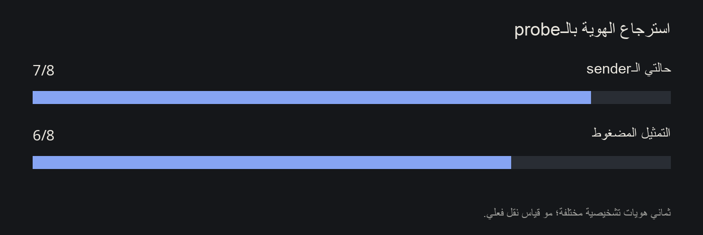
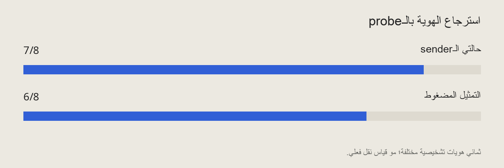
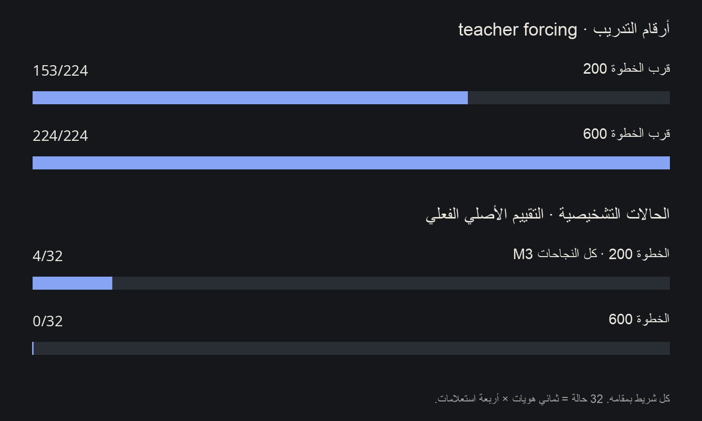
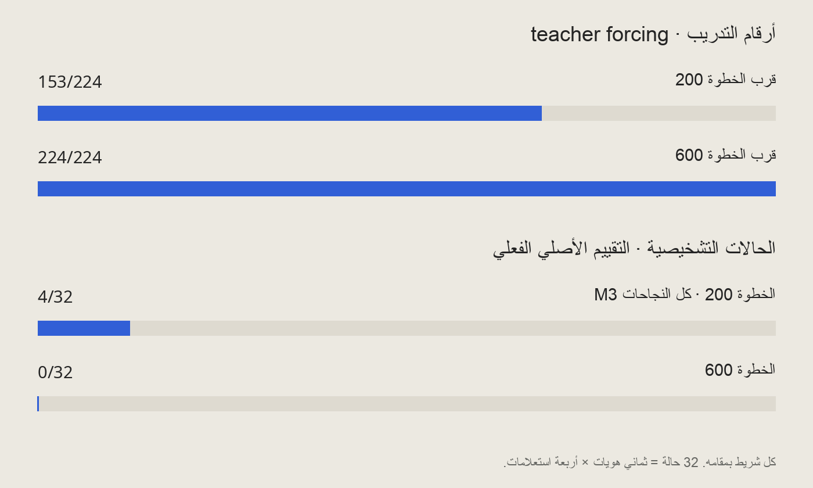

في شغلي على الـArabic morphology، فيه سؤال يرجع كل مرة: لما الـprobe يقدر يتوقع label من الـhidden states، إيش عرفت فعلاً عن النموذج؟ تقسيم البيانات بعناية يقدر يستبعد بعض الاختصارات. بس لسه ما يثبت إن النموذج يستخدم نفس المعلومة عشان يطلع جوابه.
تجارب الـlatent binding الأخيرة اختبرت الفرق هذا من جهة ثانية. Probe متدرّب على بيانات التدريب بس قدر يسترجع أغلب الـIDs التشخيصية من تمثيل المصدر. لكن الـmapping المتعلم إلى receiver ثابت نجح في ID واحد بس. ولما كملت نفس التدريب، تحسن الأداء على بيانات التدريب واختفى حتى النجاح الوحيد هذا.
هذي نتائج تشخيصية مكتملة، مو نقل قوي يعمم على IDs جديدة. المهمة مضبوطة على IDs من حرف ورقم، مو تقييم للغة العربية. والـIDs الثمانية سبق دخلت في التقييم والتصميم؛ مو test set بكر.
المهمة تستخدم IDs من حرف ورقم، زي M3. التدريب على 56 ID، ولكل واحد أربعة استعلامات موجودة مسبقاً. البنك التشخيصي فيه ثمانية تركيبات ID كاملة ما دخلت ضمن مجموعة التدريب الإيجابية. أربعة استعلامات لكل ID تعطينا 32 حالة مقاسة في كل شرط، بس لسه عندنا ثماني هويات مختلفة، مو 32.
الـsender يوفر features من الـhidden states. تمثيل مضغوط من 64 بُعد ينقل معلومات المصدر إلى reader يكيّف receiver ثابت. الذاكرة المجمعة للـIDs المختارة هنا تجهيزات للتطوير؛ ما تثبت binding على جدول مصدر كامل، ولا التقاط جديد من المصدر.
هنا نفصل ثلاثة أسئلة: هل probe ندرّبه يقدر يسترجع الـID من الـfeatures؟ هل واجهة الـreceiver الحالية تقدر تنتج الجواب المطلوب لما نستخدم supervised oracle fitting؟ وهل mapping متدرّب على الـ56 ID يقدر يخلي الـreceiver يجاوب صح على الـIDs التشخيصية؟ نجاح واحد منها ما يحسم الباقي.
Ridge probe ثابت، متدرّب على الـ56 ID، فك سبعة من الثمانية من حالتي الـsender. والـprobe المقابل على التمثيل المضغوط فك ستة. ولا واحد من التدريبين استخدم labels الـIDs التشخيصية أو oracle codes كأهداف تدريب.


في فحص leave-one-whole-ID-out على بيانات التدريب، النتيجة كانت 56/56 لحالتي الـsender و44/56 للتمثيل المضغوط. ومع إزاحة labels التدريب كـnull control، النتائج التشخيصية كانت 1/8 و0/8 بالترتيب. تطبيقان مستقلان بـNumPy وTorch اتفقوا ضمن حدود الخطأ المسجلة، ونفس التوقعات الأساسية طلعت من الاثنين.
A0 انقرأ صح من حالات الـsender وانفقد عند هذا الـprobe بعد الضغط. أما A2 فكان غلط من الـsender أصلاً. هذا يحدد فين طريقة القراءة الخطية هذي خسرت تعميمها. ما يثبت إن الضغط مسح الهوية، ولا إن decoder ثاني ما يقدر يسترجعها.
تجربة الـalignment غيرت مصفوفة reader.value.weight الموجودة بس. الـsender والـreceiver والـrouting وباقي مدخلات الجسر وعدد المعاملات كلها بقيت ثابتة. ما فيه codebook وقت الاستدلال ولا oracle lookup للـIDs التشخيصية. التدريب استخدم الـ56 ID واستعلاماتها الـ224، على 200 خطوة Adam محددة مسبقاً.
المصفوفة المصدّرة انحملت في الـnative reader. الضوابط المألوفة عدّت: 32/32 للحالات الأصلية، و32/32 لاتباع المصدر المنقول، و31/32 عند تغيير الربط. في الـIDs التشخيصية، النتيجة كانت 4/32 في كل شرط. بس النجاحات الأربعة كلها كانت M3. السبعة الباقين فشلوا.
الـjoint scoring والـcandidate-constrained sequential scoring اتفقوا. هذا مو توليد حر: الإجراء التسلسلي يختار من 16 بادئة وثمانية أرقام. وبوابات النجاح المسجلة مسبقاً، العددية والمقارنات المزدوجة، لسه فشلت. فيه نقل محدود من المصدر، بس ما عندنا نظام binding ناجح يعمم.
نتيجة الـprobe، ستة من ثمانية، ونجاح هوية واحدة عند الـreceiver قياسان مختلفان، مو causal ablation مضبوطة. يبينوا الفجوة بين اللي الـprobe هذا يقدر يسترجعه واللي الـmapping هذا يقدر يخلي الـreceiver يسويه. ما يحددوا دائرة واحدة مسؤولة عن الفشل، ولا يثبتوا إن إصلاح جهة الـreceiver مستحيل.
في continuation تجمّدت لحالها، حمّلت معاملات الخطوة 200 وحالة Adam، وأعدت إنتاج نقطة البداية بالضبط، ثم كملت 400 تحديث بنفس الإعدادات. الأداء المألوف بقي 32/32/31. الأداء التشخيصي نزل من 4/4/4 إلى 0/0/0.


الـtraining loss المسجل قبل التحديث نزل من 0.5465 إلى 0.0954. مع teacher forcing، الحروف كانت أصلاً 224/224؛ والأرقام طلعت من 153/224 إلى 224/224. هذي مؤشرات تدريب قرب نقطتي النهاية، مو درجات تقييم native، ولا إثبات تقارب رياضي.
هوامش الإجابة عند الـreceiver نزلت لستة من الثمانية بين النقطتين. هامش M3 الموجب الصغير صار سالب. زيادة التدريب على نفس الهدف، في المسار هذا، ما حسّنت النقل، حتى مع وصول تصنيف بيانات التدريب للدقة الكاملة.
النقطتين هذي ما تحدد أفضل مكان ممكن نوقف فيه. لو اخترنا checkpoint جديد بناءً على البنك التشخيصي، نكون استخدمنا نتائج الاختبار للاختيار. اختيار الإعدادات يحتاج validation من IDs التدريب نفسها بس. شغل الـfour-fold المنفصل لسه شغال عند كتابة الملاحظة، وما فيه أي نتيجة مجمعة منه مستخدمة هنا.
نقطة البداية رجعت مطابقة بت ببت. الدرجات التاريخية والحالات المكررة رجعت بالضبط؛ وفحوص native/render parity والتقييم المباشر والـrouting وعقد حالة الـreader المحفوظة كلها عدّت. Hash الـreceiver الثابت ما تغير، وحالته رجعت كما كانت. فحوص إعادة بناء الأوزان والدرجات المستقلة عدّت كمان.
الفحوص هذي مهمة لأن واجهة مكسورة ممكن تعطينا نفس عنوان الفشل. هنا تساعدنا نفسر النتيجة كضعف نقل تحت الـmapping والهدف اللي اختبرناهم. بس ما تخلي البنك التشخيصي الصغير، اللي سبق استخدمناه، ممثلاً لفهم اللغة عموماً.
في morphology probing، التقسيم الأصعب يسأل إذا الـdecoder يعمم خارج الكلمات المألوفة. التجربة هذي تضيف حد ثاني: حتى الـdecoder اللي يعمم، لسه هو decoder إحنا درّبناه. نجاحه ما يثبت إن آلية الإجابة عند النموذج تستخدم التمثيل بنفس الطريقة.
الرابط المفيد هنا في طريقة الاختبار، مو نتيجة جديدة عن العربي. استرجاع المعلومة بالـprobe، وإمكانية الوصول للجواب بتدريب oracle، وسلوك الـreceiver انطلاقاً من المصدر، كل واحد يحتاج دليله. هنا الاسترجاع كان قوي نسبياً، والنقل الفعلي محدود، وزيادة التدريب خلّته أسوأ. لما نفصل النتائج، نقدر نسأل في التجربة الجاية سؤال له جواب واضح.